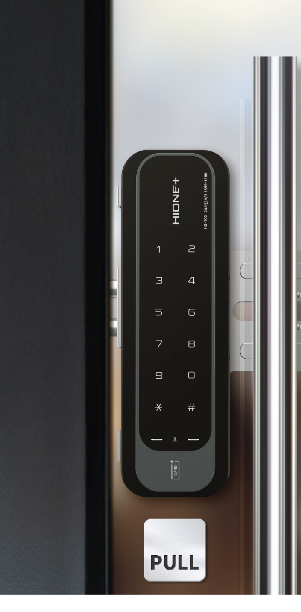
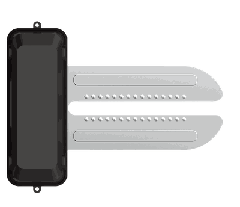
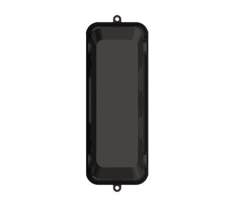
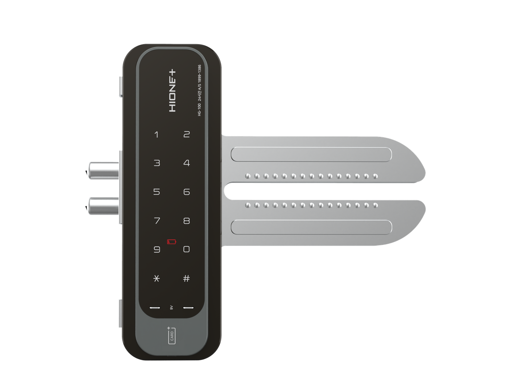

에스원 · 유리문형 전자도어락
에스원 유리문형 도어락 · GDL10001

카페, 사무실, 상가 등 유리도어가 많은 상업 공간을 위한 에스원 유리문형 도어락 GDL10001.
좌수·우수 상관없이 겸용 설치가 가능하며, 도어 형태에 맞춘 정확한 시공으로 완성도 높은 보안을 제공합니다.
DESIGNED FOR GLASS DOORS
INSTALL
도어 형태에 따라 별매품 스트라이커 필요 여부가 다르니 꼭 확인해 주세요
문이 두 짝으로 여닫히는 양개형 유리도어는 별매품 스트라이커를 추가로 설치해야 합니다.

문틀(프레임)이 유리가 아닌 경우에는 본체의 데드볼트 위치에 맞춰 프레임을 타공하여 설치하면 되며, 별도의 스트라이커가 필요하지 않습니다.
※ 단개 유리도어라도 문틀 자체가 유리로 되어 있는 경우에는 별매품 스트라이커를 추가로 설치해야 합니다.

※ 스트라이커는 별매품입니다.
※ 도어 실측 후 설치기사와 상담하여 필요 여부를 확인하시기 바랍니다.
※ 본 제품은 자체 구매 후 고객이 별도로 설치해야 하는 상품입니다.

| 모델명 | GDL10001 |
|---|---|
| 정격 전압 | AA형 알카라인 1.5V 전지(LR6) 4개 (6V) |
| 비상 전원 | 9V 전지 (6LF22) 1개 (별매품) |
| 작동 방법 | 기본 전자제어 방식 (비밀번호 입력, 카드 인식) |
| 기기의 명칭 | RFID용 무선기기 |
| 무게 | 1.3kg (실내측·실외측 포함) |
| 크기 (실내측) | 54.3mm(W) × 173.09mm(H) × 42mm(D) |
| 크기 (실외측) | 54.3mm(W) × 173.09mm(H) × 16mm(D) |
| 스트라이커 (별매) | 12,000원 (부가세 별도) · 양개 유리도어/유리 프레임 단개도어 설치 시 필요 |
| 설치 방향 | 좌수 · 우수 겸용 |
| 무상 A/S | 2년 |
※ 제품 사양 및 색상은 개선을 위해 사전 예고 없이 변경될 수 있습니다.
Q 모든 유리도어에 설치할 수 있나요?
네, 좌수·우수 겸용으로 대부분의 유리도어에 설치 가능합니다. 다만 양개형 유리도어이거나 문틀이 유리인 경우 별매품 스트라이커가 추가로 필요합니다.
Q 스트라이커가 무엇이고, 꼭 구매해야 하나요?
스트라이커는 도어락의 데드볼트가 걸리는 별도 부품입니다. 양개 유리도어 또는 유리 프레임의 단개도어는 스트라이커(별매, 12,000원 부가세 별도)가 필요하며, 일반 프레임의 단개 유리도어는 프레임에 직접 타공 설치하므로 스트라이커가 필요하지 않습니다.
Q 구매 가격에 설치까지 포함되어 있나요?
아니요. 본 제품은 자체 구매 후 고객이 별도로 설치해야 하는 상품이며, 설치비는 포함되어 있지 않습니다.
Q A/S는 어디로 문의하나요?
제조사 A/S 센터(1899-1386)로 문의하시면 됩니다. 무상 A/S 2년이 기본 제공됩니다.
GUIDE
A/S 대표전화 1899-1386